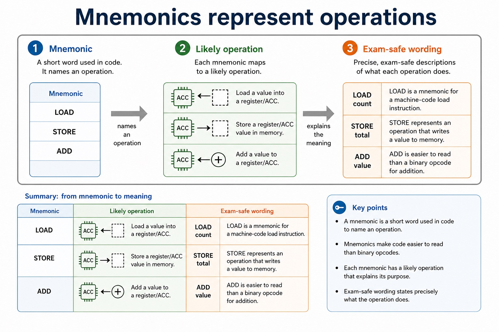
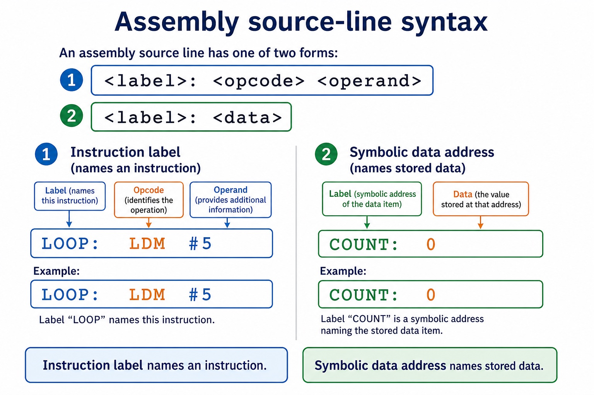
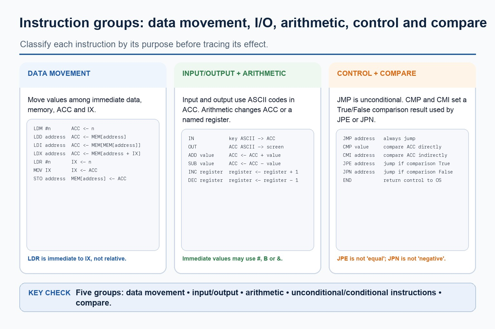

Why this matters
Exam answers often lose marks by calling assembly "machine code" or calling an assembler a compiler.
Cambridge AS9618 Computer Science | Paper 1 Section 4
Assembly language is a low-level language that uses mnemonics such as LOAD, ADD and JMP to represent machine-code instructions. It is closer to the processor than high-level language, but it still needs an assembler before the CPU can execute it.
LOOP: LOAD total
ADD value
STORE total
JMP LOOPMnemonics make the operation readable; the assembler makes it executable.
Exam answers often lose marks by calling assembly "machine code" or calling an assembler a compiler.
Assembly is low-level and uses mnemonics, but it is not directly executed as text by the CPU.
Warm-up hook
Click the best answer. The mnemonic is the readable operation, not the number doing the heavy lifting.
Knowledge point 1

Knowledge point 2

Knowledge point 3
LOOP: ADD value ; add next item
A symbolic name for an address or line, often used by jump/branch instructions.
The value, address, register or label used by the instruction.
Text for human readers. Comments are ignored by the assembler.
An instruction to the assembler, not a CPU instruction. It may reserve storage or define constants.

Knowledge point 4
An assembler translates assembly to machine code. A compiler usually translates high-level language to lower-level code.

Interactive tool
Select a line and identify its mnemonic, operand and translation role.
Worked examples
5-minute quiz
Use exact vocabulary. The CPU will not be offended, but the mark scheme might be.
Mistake debugging
Exam-style questions
These are original Cambridge-style questions. MS wording is strict about assembler vs compiler and assembly vs machine code.
Core syllabus content
The two-pass assembler stages are Pass 1 and Pass 2. Pass 1 scans source, assigns addresses and builds a symbol table for labels, allowing forward references. Pass 2 translates mnemonics/operands using the completed table and produces machine code; invalid mnemonics or unresolved symbols are reported.
The source form <label>: <opcode> <operand> labels an instruction, while <label>: <data> assigns a symbolic address to a memory location containing data. Pass 1 records both kinds of label in the symbol table.
The five instruction groups are data movement (LDM, LDD, LDI, LDX, LDR, MOV, STO), input/output (IN, OUT), arithmetic (ADD, SUB, INC, DEC), unconditional branch and conditional branch. JMP is the unconditional branch instruction; CMP, CMI, JPE and JPN form the compare and conditional branch group. END returns control to the operating system.
Data movement: LDM #n loads immediate n into ACC; LDD <address> loads the directly addressed contents into ACC; LDI <address> follows the address stored at <address>; LDX <address> loads from <address> + IX; LDR #n loads n into IX; MOV <register> moves ACC to IX; STO <address> stores ACC at the address.
Arithmetic: ADD <address> or ADD #n/Bn/&n adds a memory value or immediate denary/binary/hexadecimal value to ACC; SUB has the corresponding forms; INC <register> and DEC <register> change ACC or IX by one.
Control, comparison and I/O: JMP <address> is unconditional. CMP <address> or CMP #n compares ACC directly or with an immediate value. CMI <address> compares using indirect addressing. JPE jumps after a True comparison and JPN after a False comparison. IN inputs one ASCII character code to ACC; OUT outputs the character whose ASCII code is in ACC; END returns control to the operating system.
ACC is the accumulator and IX is the index register. An address can be absolute or symbolic. Prefix # gives immediate denary, B immediate binary and & immediate hexadecimal data. These prefixes and operand forms are part of the instruction semantics, not optional decoration.
To trace a simple assembly-language program, make a table with one row per executed instruction and columns for the current instruction/address, ACC, IX, relevant memory or output, and branch result. Update only the state changed by that instruction, then use the updated PC or branch target to choose the next row; do not trace source lines that a taken jump skips.
For LDM #5; ADD #3; CMP #8; JPE MATCH; LDM #0; MATCH: OUT; END, the trace gives ACC 5, then 8, then a True comparison. JPE transfers control to MATCH, so LDM #0 is skipped; OUT outputs the character whose ASCII code is 8, and END returns control to the operating system. In LOOP: ADD ONE, LOOP labels an instruction; ONE: 1 labels the data location containing 1.
Core syllabus practice
1. Which pass builds the symbol table?
Pass 1.
2. What does Pass 2 do?
Pass 2 translates mnemonics and operands into machine code using the completed symbol table.
3. What is the difference between LDM #5 and LDD 5?
LDM loads literal 5; LDD loads the contents of memory address 5.
4. What does LDR #7 do?
It loads the immediate value 7 into the index register IX.
5. Classify IN, SUB, JMP and JPN.
IN is input/output; SUB is arithmetic; JMP is unconditional; JPN is conditional/compare.
6. Distinguish CMP #4 from CMI 40.
CMP #4 compares ACC with immediate value 4; CMI 40 follows the address stored at memory location 40 and compares ACC with the indirectly addressed value.
7. What do MOV IX, STO TOTAL, OUT and END do?
MOV IX copies ACC to IX; STO TOTAL stores ACC at the symbolic address TOTAL; OUT outputs the ASCII character whose code is in ACC; END returns control to the operating system.
8. Trace LDM #2; ADD #3; STO TOTAL. What changes?
ACC becomes 2, then 5; memory at symbolic address TOTAL becomes 5.
Trace the supplied program and classify the instructions, showing each change to ACC, IX, memory, output and control flow.
Summary
Homework